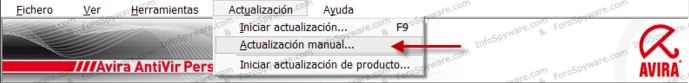

Operativa del programa
1.- Analizar haciendo clic derecho:
Con esta función puede analizar lo que desee (archivos, carpetas, discos duros, unidades extraíbles, etc, etc.) sin la necesidad de hacer un scan completo. Haga clic derecho sobre el objeto que quiera analizar:
Pulse en Analizar ficheros seleccionados con Antivir y empezará el análisis:
Una vez finalice el análisis si se ha detectado alguna infección se le abrirá otra ventana mostrándole los resultados:
Haga clic en Reparar todo para eliminar las infecciones.
2.- Detección de infecciones mediante el Guard (protección residente):
Avira Antivir en cualquier momento le puede detectar alguna infección en su sistema a través de su módulo de protección residente, al hacerle alguna detección le abrirá la siguiente ventana:
En ella, deberá elegir una de las siguientes acciones (no siempre están todas disponibles):
• Reparar
• Mover a cuarentena
• Eliminar
• Cambiar de nombre
• Denegar acceso
• Omitir
Una vez haya seleccionado la acción a tomar, haga clic en Aceptar.
3.- Funciones del icono de al lado del reloj:
El aspecto normal del icono de al lado del reloj será con el "paraguas abierto", si alguna vez ve el icono con el "paraguas cerrado": , querrá decir que Avira Antivir no está funcionando correctamente, ya sea que tenga el Guard (protección residente) desactivado, esté desactualizado o algo similar.
Si hace clic derecho sobre dicho icono, se le abrirá un pequeño menú:
En él dispone de las siguientes opciones:
• Activar Antivir Guard: Active y/o desactive la protección residente.
• Iniciar Antivir: Abra el menú principal de su antivirus.
• Configurar Antivir: Acceda directamente al apartado de configuración de Avira antivir.
• Se inició la actualización: Actualice su producto.
• Ayuda: Acceda a una guía de ayuda en inglés.
• Avira en internet: Acceda a la página web de Avira Free.
4.- Gestión de la lista de excluidos:
Desde aquí podrá gestionar su lista de excluídos para sus scans, haga clic en Configuración, después marque la casilla de Modo experto, pulse en Análisis, seleccione el apartado de Excepciones y se encontrará en la siguiente pantalla:
Para buscar archivos o carpetas que quiera excluir pulse en el botón , búsquelas, y luego haga clic en Añadir para que sean añadidas a la lista de excluídos de sus análisis.
También puede excluir archivos, carpetas y procesos de la protección residente de su antivirus. Para ello ahora haga clic en Guard, seleccione el apartado de Excepciones y se encontrará en la siguiente pantalla:
Para excluir procesos, en el apartado de arriba escriba su nombre y pulse en Añadir, para archivos y carpetas búsquelos, y siguendo el procedimiento detallado en el apartado anterior y de igual modo haga clic en Añadir, debe de pulsar en Aceptar para confirmar las exclusiones.
5.- Quitar las alertas acústicas:
Una de las cosas que varias veces molesta a los usuarios de Avira son sus alertas acústicas cada vez que éste detecta una infección...
Para desactivarlas abra el programa y haga clic en Configuración, después marque la casilla de Modo experto, pulse en General y seleccione el apartado Advertencias acústicas, se encontrará en esta pantalla:
Para que no siga alertándonos, en la parte de arriba seleccione la opción de No alertar y haga clic en Aceptar.
6.- Actualizar Avira sin conexión a internet:
Avira Antivir se puede actualizar en un PC que no disponga de conexión a internet, para ello acceda al siguiente enlace de la web de Avira desde un ordenador con internet:
• Incremental AntiVirus Update - IVDF and VDF update info
Una vez esté en esa página haga clic en Download VDF (multiple VDF) para descargar el archivo ivdf_fusebuntle_nt_en.zip, guárdelo en un pendrive y llévelo al escritorio del ordenador del que no dispone de conexión:
Cuando tenga el archivo vdf_fusebundle.zip en el ordenador el cual quiere hacer la actualización, abra Avira Antivir, en la pestaña superior pulse sobre Actualización y haga clic en Actualización manual:

Busque el archivo vdf_fusebundle.zip y haga clic en Abrir:
Avira Antivir se empezará a actualizar, cuando termine el proceso le aparecerá la siguiente ventana, haga clic en Aceptar y ya tendrá su antivirus actualizado.
Nota: Cada vez que quiera actualizar su antivirus, deberá de descargar nuevamente el archivo vdf_fusebundle.zip.